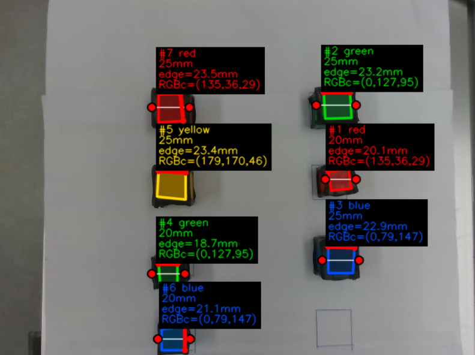

이 프로젝트는 아직 Indy7 로봇을 직접 움직이는 pick&place 전체 코드가 아니라, pick 대상 물체를 인식하기 위한 비전 모듈 단계입니다. 현재 코드는 카메라 화면에서 큐브 윗면을 찾고, 색상과 실제 edge 길이를 계산해 이후 로봇 좌표 변환과 grasp/pick 동작으로 연결하기 위한 입력 정보를 만드는 데 초점을 둡니다.
- 작업 시기 2026년 8월 1일 ~ 진행 중
- 현재 구현 범위 Pick&place에 사용할 object detection. Indy7 제어와 그리퍼 동작 코드는 후속 단계에서 추가 예정
- 주요 기술 Python, OpenCV, Intel RealSense D435i, depth 기반 3D edge 측정, 색상 검출

구현 방식
비전 파이프라인은 RealSense의 color/depth 프레임을 정렬한 뒤, 색상 마스크와 검은 테이프 외곽 조건을 함께 사용해 큐브 윗면 후보를 고르는 흐름입니다. 색상만으로 후보를 찾으면 조명이나 배경에 흔들릴 수 있기 때문에, 큐브 주변의 검은 테이프 edge가 실제로 사각형을 지지하는지도 함께 확인합니다.
cube.py를 실행 진입점으로 두고, 고정 설정과 색상 프로필을 준비합니다.realsense_camera.py에서 D435i의 color/depth 스트림을 640x480@30으로 열고 color 좌표계에 depth를 정렬합니다.cube_colors.py에서 blue, green, yellow, red의 고정 RGB/HSV 프로필을 이용해 색상 면 마스크를 만듭니다.cube_detector.py에서 검은 테이프 후보, 색상 채움률, edge 지지율, depth 안정성, 사각형 형태 조건을 순서대로 검사합니다.cube_geometry.py에서 픽셀 좌표와 depth를 3D 좌표로 복원해 edge 길이를 mm 단위로 계산합니다.cube_display.py에서 검출된 큐브의 사각형, 선택 edge, 색상·크기 라벨을 OpenCV 화면에 표시합니다.
성공 화면에서 확인한 것
성공 화면에서는 빨강, 초록, 파랑, 노랑 큐브가 각각 검출되고, 20mm 또는 25mm 기준 크기와 함께 edge 길이가 표시됩니다. 이는 아직 로봇이 물체를 집는 단계는 아니지만, pick 대상 후보를 구분하고 이후 좌표 변환에 사용할 측정값을 만들 수 있다는 점에서 중요한 중간 결과입니다.
후속 작업
다음 단계에서는 이 검출 결과를 Indy7의 작업 좌표계로 변환하고, 선택된 물체의 중심점과 높이를 기반으로 접근 위치·집기 위치·이탈 위치를 계산해야 합니다. 실제 Indy7 제어 코드와 그리퍼 연동 코드는 아직 공개 범위에 포함하지 않았고, 후속 코드가 준비되면 이 프로젝트에 이어 붙일 예정입니다.
주의할 점
- 현재 결과는 카메라 기반 object detection이며, pick&place 전체 자동화 결과로 과장하지 않았습니다.
- 조명, 카메라 거리, 큐브 배치, 테이프 상태에 따라 색상과 edge 검출 임계값 조정이 필요할 수 있습니다.
- 로봇 제어와 연결하기 전에는 카메라 좌표계와 Indy7 베이스 좌표계 사이의 calibration이 필요합니다.